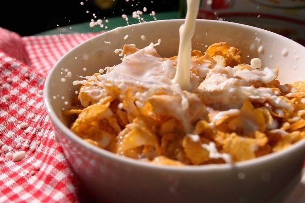

Cereal

Milk + Grain-Based Pellets = Cereal
Ingrediants:
- Milk
- Human Dog Food Grain Pellets
- Spoon and Bowl
Steps:
- Grab your bowl and place upright on a level surface (a table or floor will do).
- Pour your Human Dog Food Grain Pellets into the bowl.
- Pour milk over Human Dog Food Grain Pellets and say "When" when you have enough milky.
- Place spoon in bowl along with contents and enjoy